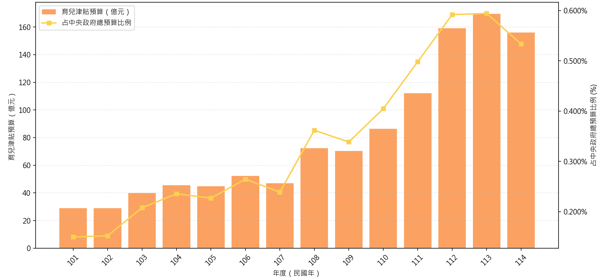
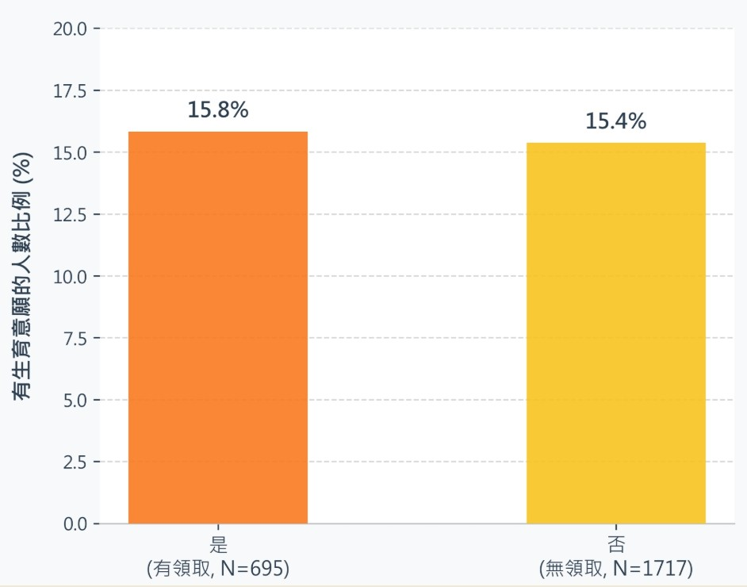
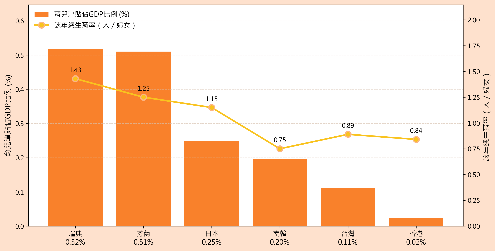
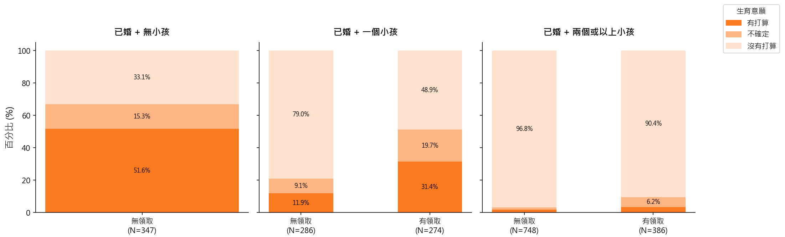
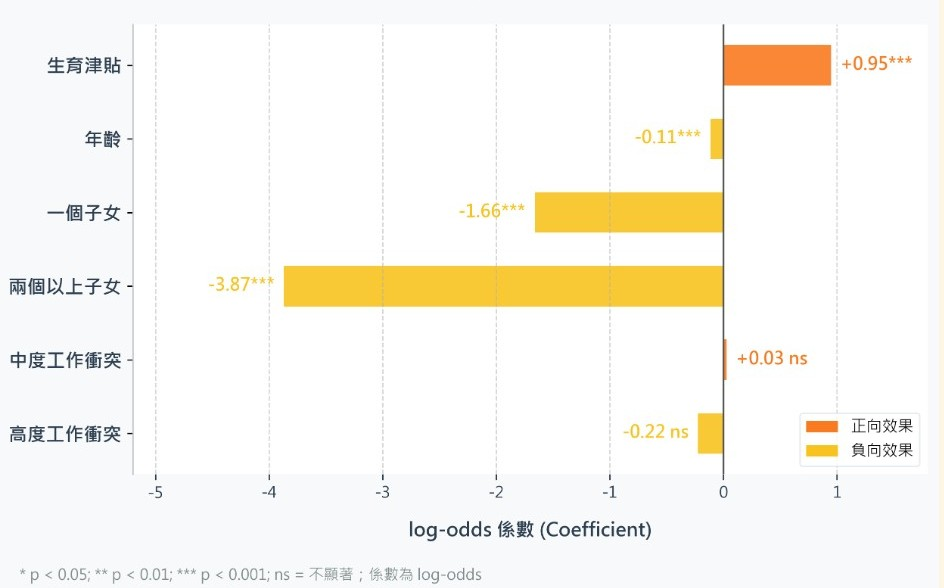
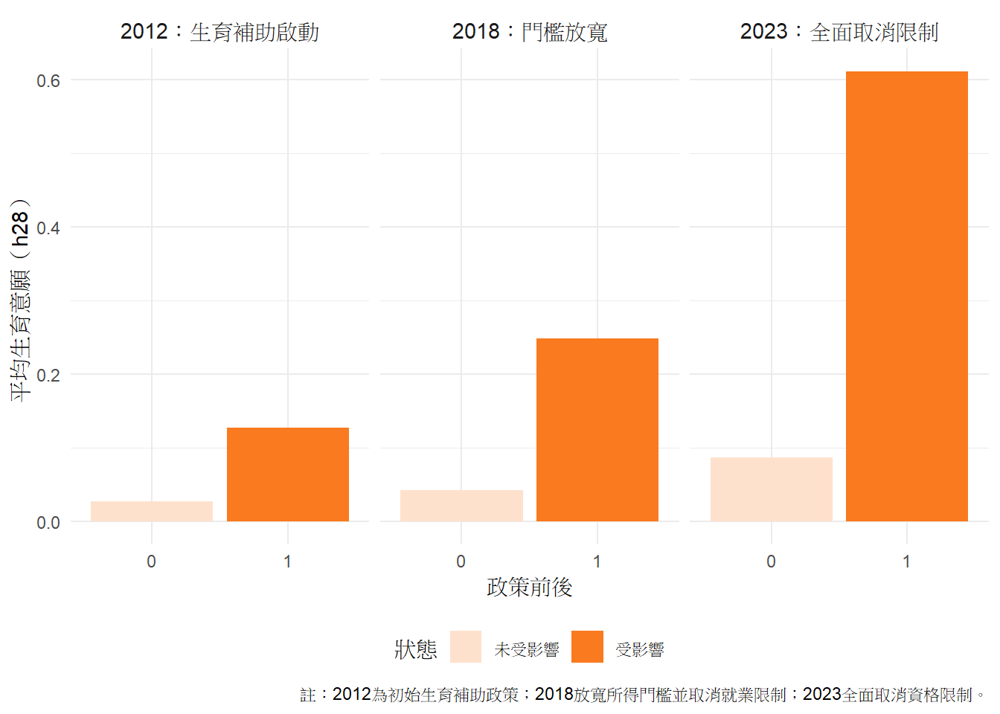
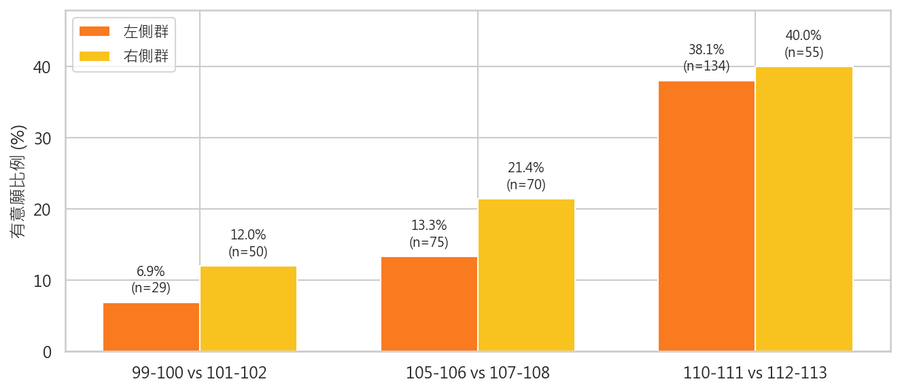

台灣在2020年2月發生了戰後首見的人口負成長現象，至今未見逆轉趨勢。而臺灣育齡女性的時期總生育率（Period Total Fertility Rate, PTFR）也持續探底，從2015的1.19一路跌到了2025年的0.695，也就是若依照2025年台灣女性的生育模式去推估，平均一位台灣女性一生僅會生下不到0.7位孩子，遠低於能夠使人口數目恰好不增不減的人口替代水準（Replacement Level）2.1，少子化趨勢已經十分明顯。
面對人口減少下的人口老化、勞動力短缺問題，台灣政府透過許多方式試圖提升民眾的生育意願，而「發錢」是其中最直截了當的手段之一。如表一所示，育兒津貼的預算規模與發放金額皆逐年提升，門檻也逐漸放寬。然而，育兒津貼政策經常引發大眾批評，許多民眾認為發放的金額相較於高昂的育兒成本，相較之下只是杯水車薪，根本難以提升生育意願。
然而，賴政府於2026年5月推出的「台灣人口對策新戰略—家庭支持篇」，將「發錢」的政策再度擴大，除了原有的育兒津貼之外，0-18歲的孩子還能夠享有月領5000元的成長津貼。政策具體運作方式是，孩子0-6歲時家庭可以自由運用每月5000元的成長津貼，6-18歲時政府會將當中的2500元存入兒少成長津貼專戶，待孩子18歲時即可領出。
面對持續加劇的少子化現象，政府選擇花費更多的財政資源在所謂的津貼政策上，也就是發放現金給生育孩子的家庭。這樣的政策究竟有沒有辦法產生成效？政府應該繼續把這部分的財政資源用在發錢，而非人口政策的其他面向（如公共托育）之上嗎？本篇報導將透過數據分析，試圖去拆解這個複雜的公共經濟學議題，期望能為少子化相關的政策討論提供有洞見的指引。


我們透過中央研究院「家庭動態調查：2024追蹤問卷（RR2024）」為主要資料來源進行分析。為了聚焦在有生育能力之受訪者的生育意願，排除60歲以下的男性與45歲以下的女性。在各國育兒津貼預算部分，我們參考日本家庭廳、韓國國會預算政策處、香港立法會、瑞典國家預算支出資料、芬蘭政府預算書等文件後自行整理。在各國GDP部分，則是以世界銀行（World Bank）和政府資料為來源進行製圖。
雖然輿論經常將台灣政府大量發放生育津貼卻缺乏實際效益批評為「政策買票」，然而透過跨國比較可以發現，台灣的育兒津貼佔GDP比例與總生育率皆偏低，說明台灣的生育政策仍有進步空間。

首先以家庭與子女數進行分組，比較生育津貼與生育意願的關聯。從圖表結果可以發現兩個趨勢：首先，生過越多小孩的父母的再生育意願越低。即使未領取津貼，已婚無子女的族群仍有逾50%受訪者有生育意願。第二，分別比較「已婚＋一個小孩」與「已婚＋兩個或以上小孩」，皆能發現生育津貼與較高生育意願呈現正向關聯，可以初步推論生育津貼應有助於提高民眾的生育意願。另外，未婚生育的樣本數不逾50筆，說明婚姻與生育在台灣仍高度相關，未婚生育案例相當少見。

上述兩個趨勢能帶出下面的問題：生育津貼的實際影響力為何？究竟是哪個因素對於生育意願的影響程度較強？
在控制年齡、子女數、工作彈性、住房狀況、居住地後，可以發現生育津貼有助於提升生育意願，且具統計顯著。說明在相同條件下，生育津貼確實能提升民眾的生育意願。然而，子女數量對降低生育意願的效果更強，生育津貼的實際效果不足以抵消已有子女帶來的生育意願下降。

如何透過政策增加民眾的再生育意願呢？2012年首次建立生育補助政策，對象為孩子未滿2歲且父母一方未就業的家庭。2018年取消「父母一方未就業」限制，但仍有「綜合所得稅率未達20%」才能申請的限制。2019年將補助對象擴大至2-5歲，使受惠家庭增加。2023年取消綜合所得稅的排富門檻，將政策轉型為全民適用的少子化因應工具。
比較第一胎出生的年份是否有生育津貼補助，我們發現，2012年生育剛起步時要求父母一方未就業才能領取，生育津貼尚未形成很強的生育誘因。2018年放寬限制後，政策與生育意願之間的關聯變得更強。2023年全面取消資格限制，受政策影響者有超過六成表示有再生意願，意願明顯提升。說明生育津貼鬆綁後，受影響家庭「再生意願」明顯較高。

在生育補助啟動、「父母一方未就業」門檻取消，以及全面取消資格限制的2012、2018與2023這三個育兒津貼政策分界點附近生下孩子的父母，他們的再生育意願也有所差異。透過表七可以看到，在生育津貼啟動／放寬前兩年生下孩子的父母，再生一個孩子的意願，幾乎都比在生育津貼啟動／放寬當年或隔年生下孩子的父母來的低，可見「領到津貼」這個因素，可能真的或多或少提升了父母願意再生育的意願。

台灣的育兒津貼發放條件日益寬鬆，金額也不斷提升，常被批評為「政策買票」、「未將錢花在刀口上」。然而，對照東亞與北歐諸國的預算數字後，我們發現台灣政府花在育兒津貼上的錢，相對來說仍然偏低。
資料中幾乎沒有未婚者領取育兒津貼，可見台灣的非婚生子現象極度不普遍。而台灣過去的「父母一方未就業育兒津貼」政策，也反映了將男女家庭視為預設值、忽略單身育兒家庭的傳統婚家邏輯。
育兒津貼的成效經常被懷疑，認為這麼一點小錢對提升生育率來說不會有助益。然而，我們透過統計模型發現，育兒津貼對於「生過孩子」的家庭來說，具有其提升再生孩子意願的效果。然而，此提升效果並不突出，無法彌補「多生一個孩子」降低生育意願的效果。